1997
At the age of 4, during my first year of school, I was introduced to computers. I recall playing educational computer games and even using MS Paint to design a robot by using basic shapes. My introduction to computers at such an early age, was a fundamental factor towards the development of my computer engineering career.
1999
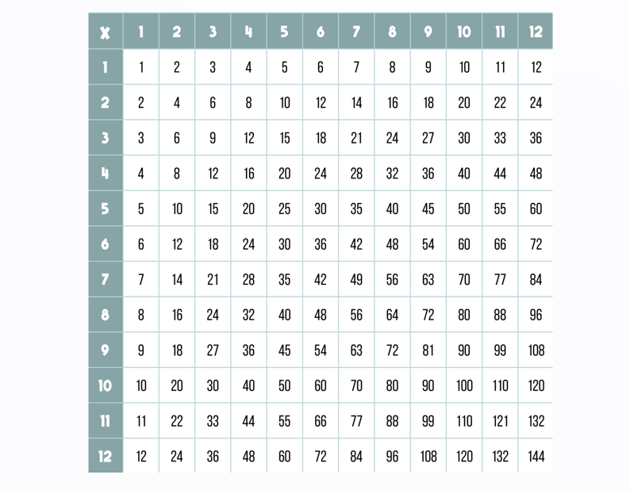
At the age of 6, I was introduced to the concepts of time and multiplaction. I believe this was one of the most significant key moments, that not only helped me succeed in school, but defined and originated my mathematical career, which eventually influenced my decision to become an engineer.
2001
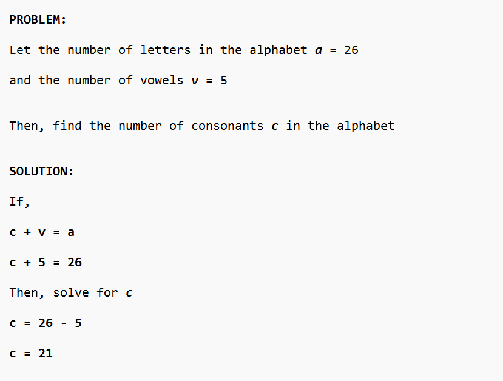
During the 2nd grade, I experienced another key momemt that contributed to the development of my academic performance. Our teacher posed a question to the class, and while everyone used a classic approach, I used mathematics and algebra to find the answer before anyone else.
2003
Throughtout elementary, I continued to display strong academic performance by consistently earning high grades and test scores. Eventually I was admitted into the Gifted And Talented Education program. This was another pivotal moment, as it increased my academic confidence and made me believe that I could accomplish high intellectual achievements.
2006
During middle school, my academic consistency remained in tact. I earned high grades, high test scores, and successfully completed various Pre-Advanced Placement courses. As a result, I began my first algebra course in 8th grade even though the conventional route did not introduce students to algebra until 9th grade (high school).
2010
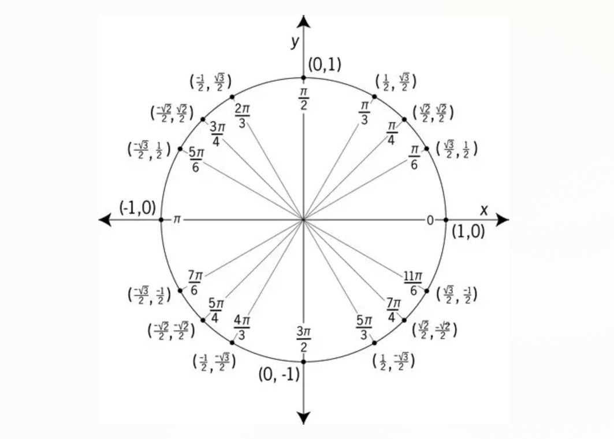
During my senior year in high school, I began my first Pre-Calculus course. I was presented with new, challenging mathematical concepts, but I still enjoyed it more than any other high-school course. More importantly, my success in this course, essesntially strengthened my decision to pursue a college degree involving mathematics.
2011
As high-school graduation approached, I spent several hours one night,
researching and thinking about the career/college major that I would
decide to pursue. My desire to choose a math-based subject, immediately
drew me to engineering. Additionally, my interest in learning how technology was
fundamentally designed, narrowed my decision down to:
Computer Engineering
2011
I ended high-school by completing multiple
Advanced Placement courses
such as AP Physics, AP Literature, AP Government, and Pre-AP Pre-Calculus. This was a
significant achievement that helped me gain confidence and prepared me for the upcoming
college-level courses.
2011
As a first-generation student, starting college was a huge moment for me. It was the next major phase in my acadameic career and the beginning of my engineering undergraduate studies.
2012
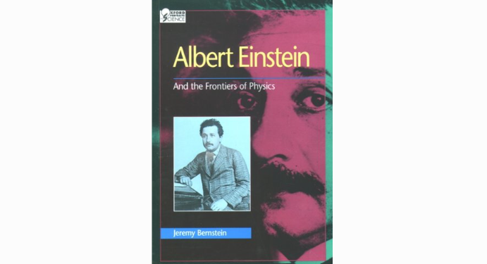
In 2012, I became interested in learning why Albert Einstein was considered a genius. I wanted to learn about what he accomplished. I attempted to read a biography on his achievements, but I struggled to fully comprehend the physics. Even though I initially did not fully understand, this interest in Einstein later became another crucial moment that posistively impacted my academic and engineering career.
2013
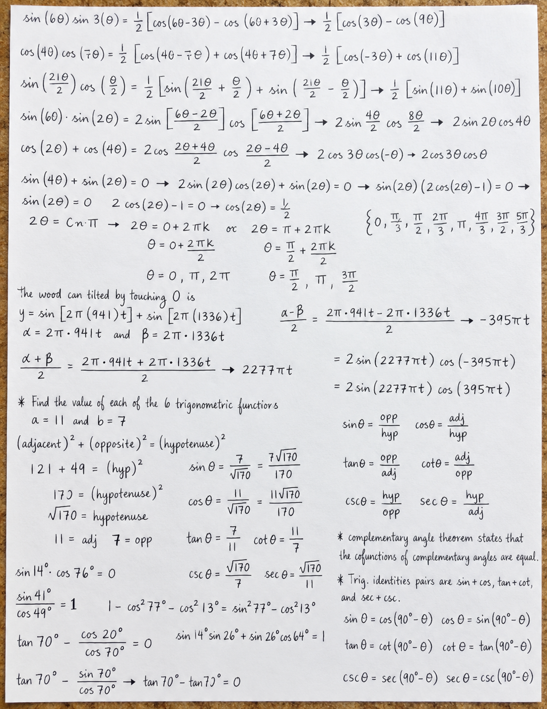
College Algebra was the first math course that I took in college, followed by Pre-Calculus. I enjoyed both courses, the new concepts, and the new challenges. Completing these courses was important because I felt reassured that I chose the correct major, that I was capable of completing college-level math, and gave me encouragement to keep moving forward with my studies.
2015
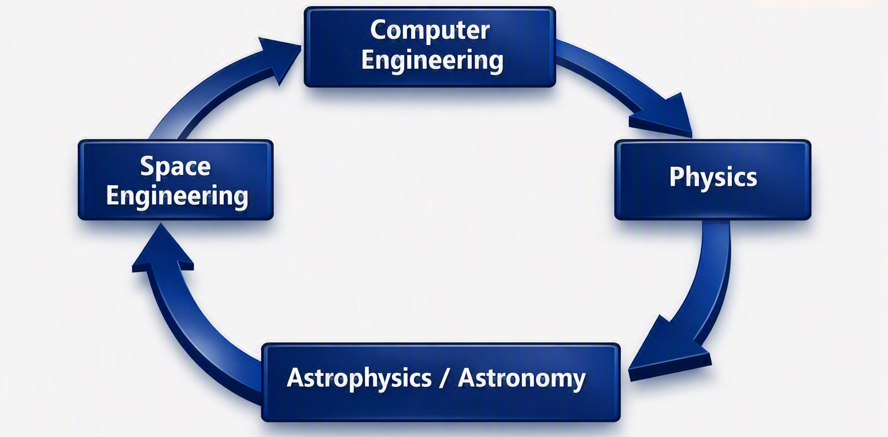
Developing a passion for science was not only one of the most pivotal moments
of my academic and engineering career, it was one of the
most pivotal moments of my life
A documentary on Cosmology and one chapter by Stephen Hawking, sparked curiosity in me that led me to revisit Einstein's biography. I began to understand the concept of General Relativity but more importantly, I was introduced to a deeper level of both science and mathematics.
I was so interested by these new concepts that I considered switching my major to Physics. Then, due to my interest in space, I considered studying Astrophyics or Astronomy. Afterwards, I realized that I could still be involved with Space exploration as an engineer in the space industry. In the end, I decided to continue pursuing my computer engineering degree because I believe it can lead to opportunities in the space engineering field.
I felt extremely motivated and decided to increase my engineering focus and work harder to acheive my new goals.
2015
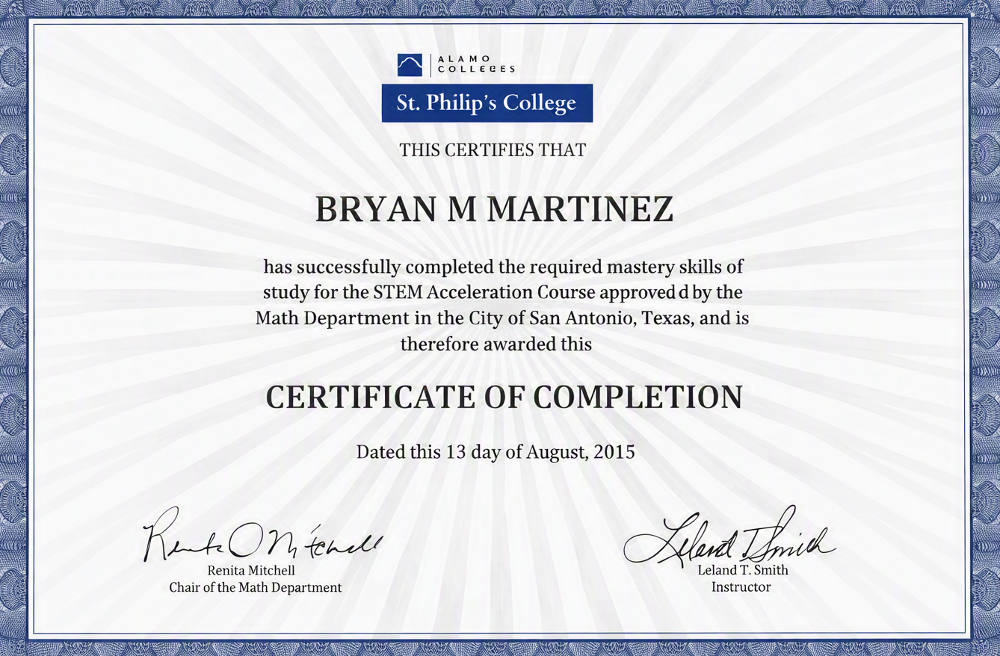
My increased focus in engineering encouraged me to enroll and complete an accelerated 2-week math course. This was a 60-hour course (6 hours/day) that definitely fueled me with additional mathematical confidence and helped prepare me for the upcoming, next level in math: Calculus
2015
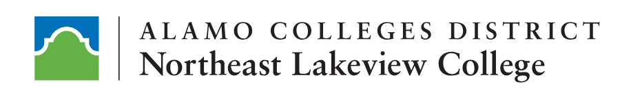
What better way to test my new engineering mindset than with Calculus and Computer Programming Fundamentals courses? I knew these courses were going to be challenging, but instead of feeling nervous, I felt excited. This semester marked a new phase in my academic performance and focus.
2017
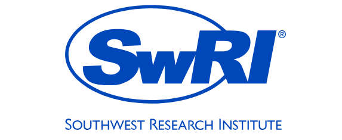
My scientific passion led me to discover SwRI in 2015, and I wanted to work there ever since then. Thankfully, 2 years later, SwRI offered me the first science role opportunity in my career! I was absolutely thrilled and loved everything about it. It reassured my decision to pursure a scientific career and motivated me to continue pursuing my degree.
2017
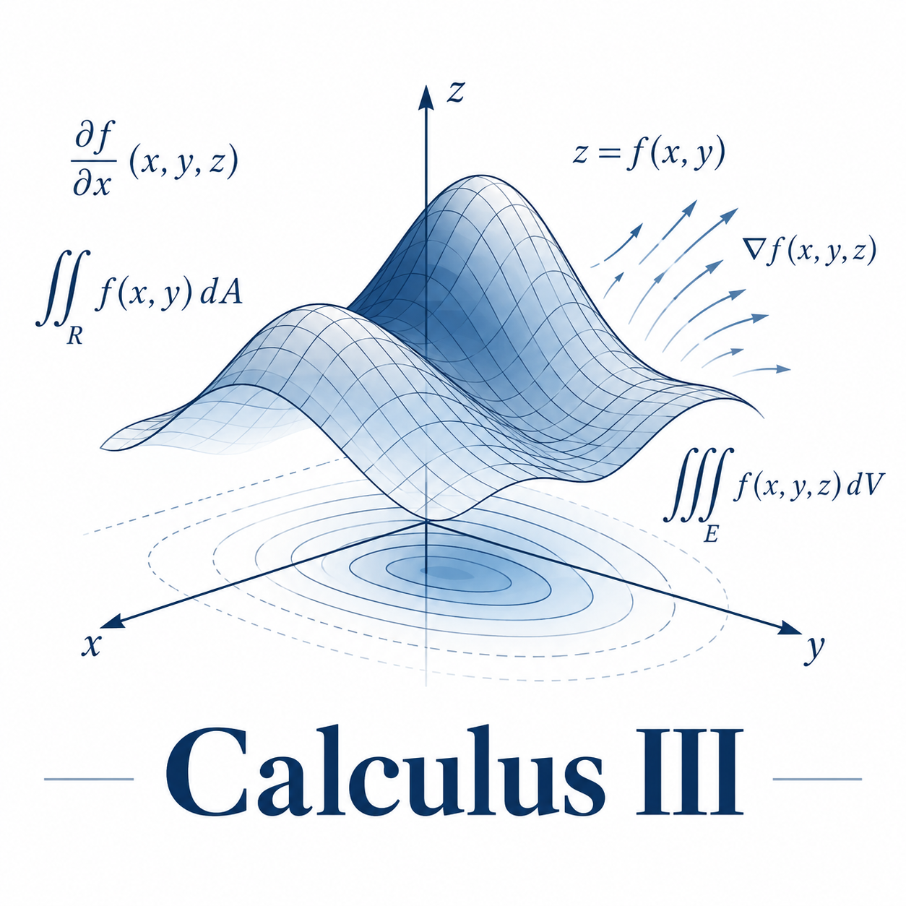
Receving an A in my Calculus III course was a significant mathematical milestone and achievement
that also marked the ending of my collegiate studies. After successfully completing
this course, I knew I was ready for the next steps:
university admission and enrollment
2018
I worked hard to get to this point, and once I got here, it was full-steam ahead. Throughout my time at UTSA, I remained significantly focused on my studies, aimed for a high GPA, and genuinely enjoyed the university-level engineering, science, and math courses.
2018
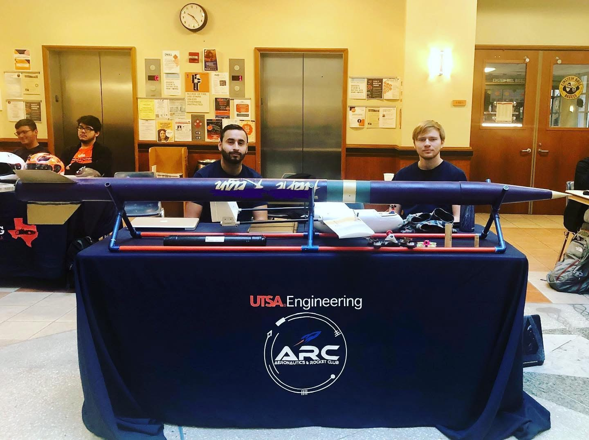
I joined ARC shortly after starting my first semester at UTSA. It was the student organization that interested me the most, and I was a member throughtout my time at UTSA. I was introduced to rocketry, and learned how to design and launch rockets.
2019
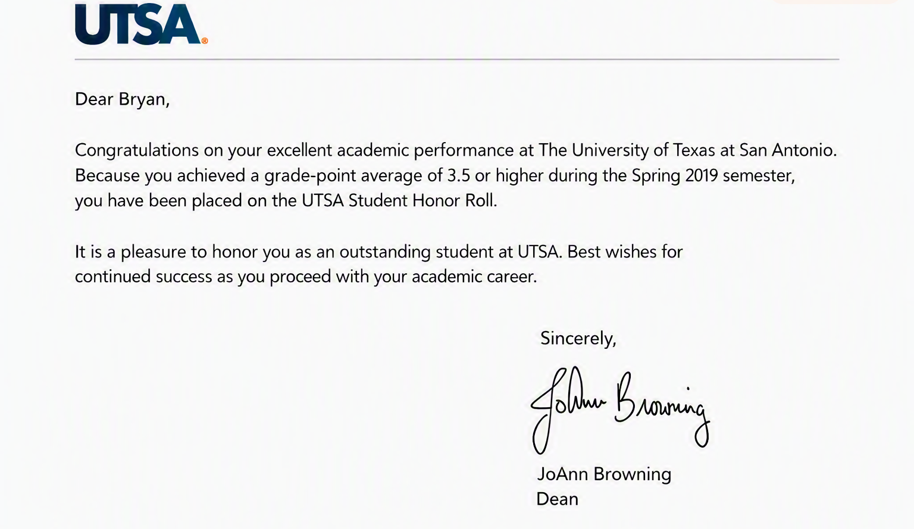
Towards the end of the Spring 2019 semester, I received a letter in the mail, notifying me of my placement on the UTSA Honor Roll. This was very meaningful to me and motivated me to continue performing well in my classes.
2021
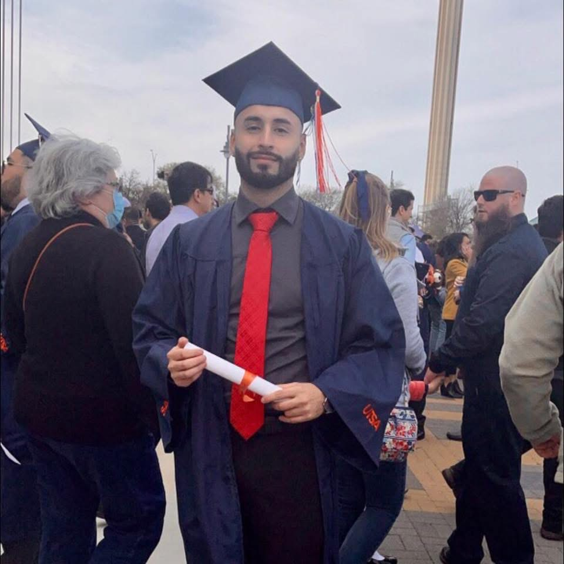
After several years of hard work, intense effort, dedication, consistency,
and persistence, I finally acheived my principal academic goal and received my
Bachelor of Science Degree in Computer Engineering
2023
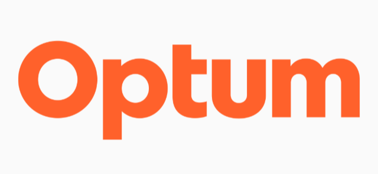
Starting my first professional engineering role was undoubtedly one of the biggest steps in my career. I was introduced to a professional engineering environment, learned about professional practices, and gained significant engineering experience. I am very thankful to be part of such a strong network engineering team.
2025
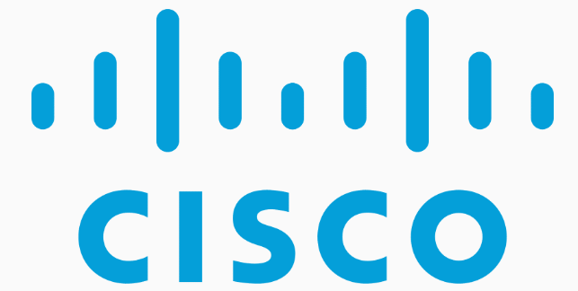
Engineering at Cisco was a truly valuable experience. To be part of of the biggest network device manufacturing company, was a huge accomplishment that increased my network engineering knowledge and confidence significantly.
2025
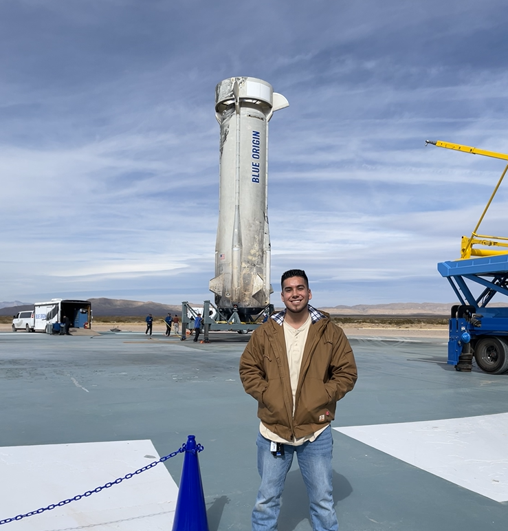
As I was approaching graduation, my brother was beginning his
initial semesters at UTSA. He decided to pursue a degree in mechanical engineering,
and that made me feel really proud of him. Impressively,
he displayed such excellent academic performance, that soon after he graduated,
he was hired at:
Blue Origin.
This outstanding achievement had an
incredibly profound effect on the both of us.
2026 - June
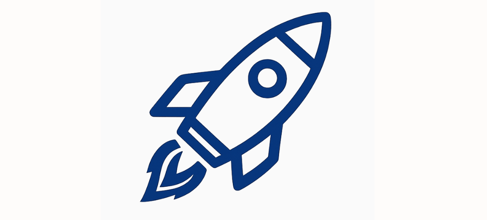
During the summer of 2026, I was convinced that it was time for me to pursue a new engineering role. Then, after discussions with my brother about his role at Blue Origin, I realized that I too, had been interested in a space engineering role since 2015! I began using AI efficiently, to increase my productivity and developed an agressive plan to help me acheive my dream. It was as if something suddenly hit me, and reignited the spark that propelled me to succeed back in 2015.
2026 - June
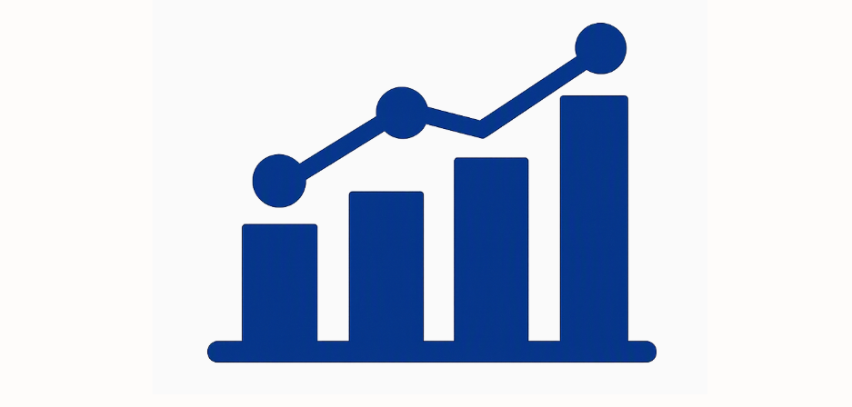
What started off as a progress tracker, gradually evolved into an engineering DAQ framework. This project is significant to me because it marked the beginning of a new, profound, and advanced, software engineering era.
2026 - June
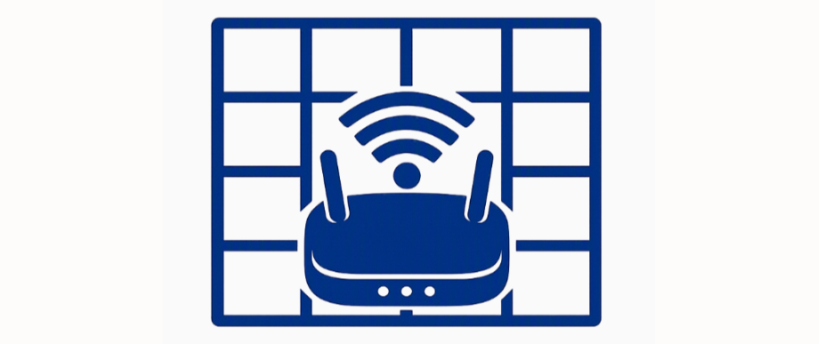
I used AI to review and improve my Python computer programming skills. Eventually I felt confident to begin developing a software tool that autonomously generates a network port-matrix and assigns switch-ports to network devices. I presented this tool to my network engineering team and they standardized it!
2026 - July
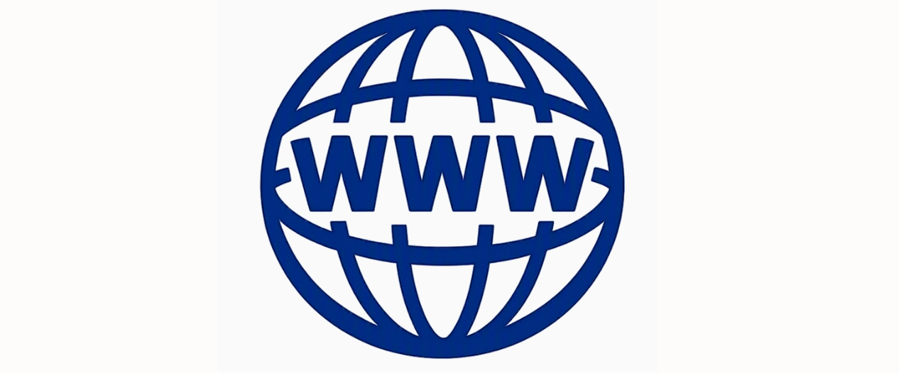
This is one of the projects that I have most enjoyed working on, simply because of the heavily involved design aspect. I am definitely interested in continuing to improve my website development skills.
2026 - September
I enrolled in this program, specifically due to my interest in space engineering. I believe this certification can significantly help me succed in a Controls & Intrstrumentation role and can also provide meaningful value.
2026 - September
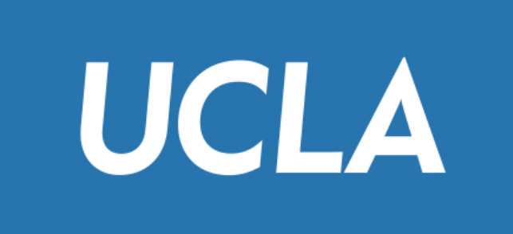
I enrolled in this program, due to my interest in mastering my computer programming skills. I would like to improve my current software engineering skills and learn new programming languages as well.
2026 - October
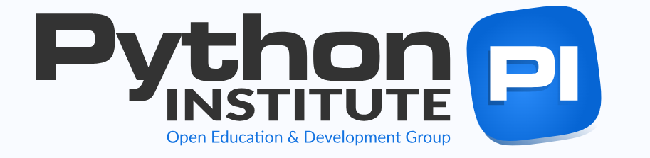
Certifcation completion date: October 05, 2026
I officially became a certfied Python programmer after successfully completing Python Institute's PCEP examination. I felt a great sense of accomplishment and this acheivement further fueled my motivation to continue advancing my engineering career.
2027 - March
Certifcation completion date: March 12, 2027
2027 - June
Certifcation completion date: June 13, 2027
2027++
My first and most significant goal is to become an engineer in the space industry. Now, more than ever, I feel confident and ready to tackle on this challenge. To be able to contribute to the advancement of science through space exploration while also adavancing my engineering career, is something that would bring incredibly meaningful fulfillment to my life.
I am also interested in continuing my education by completing the certification programs that I am currently enrolled in. Additionally, earning a graduate degree some day is also something that I've always highly considered.
My main focus and interests at the moment are Space Engineering, Controls & Instrumentation, and Computer Programming. Other fields of study that I would be interested in learning more about include Robotics, AI, Quantum Computing, Quantum Physics, Physics, and Mathematics.